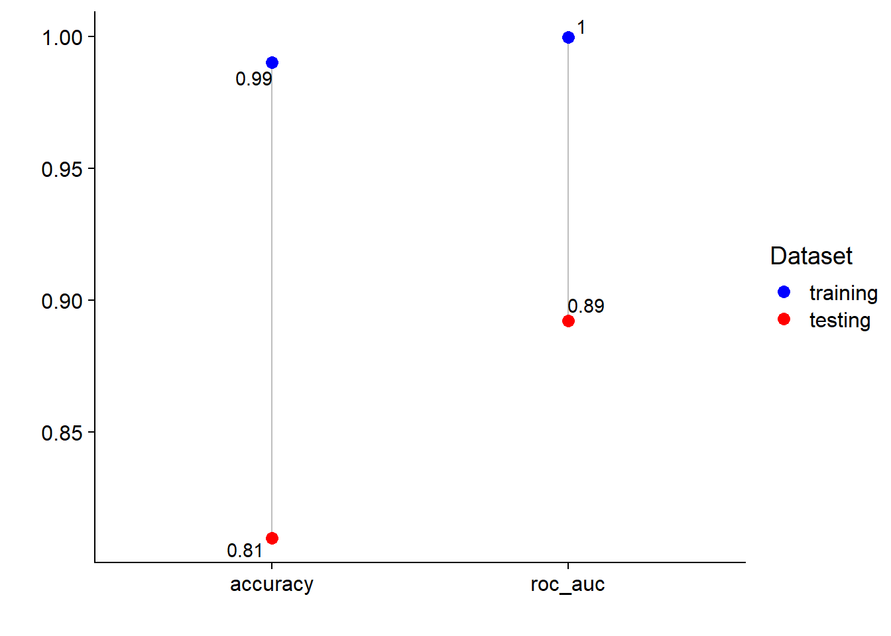
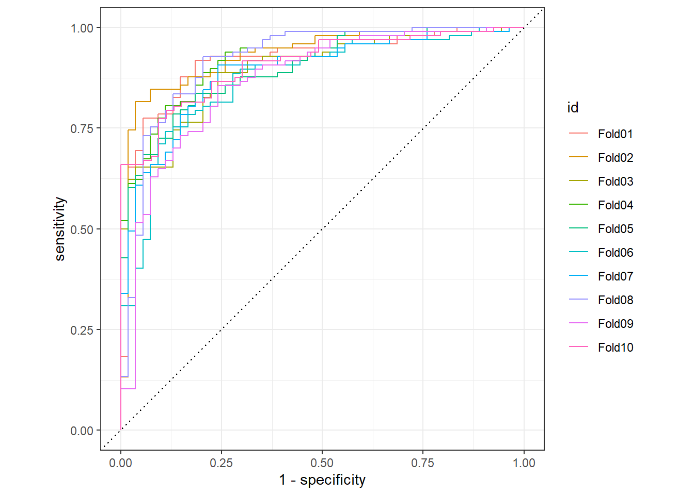
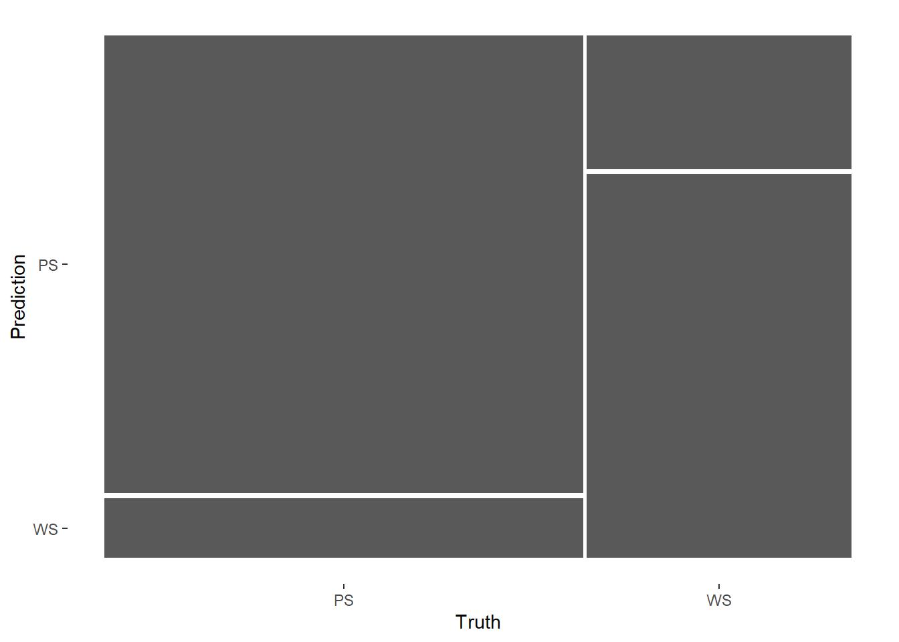
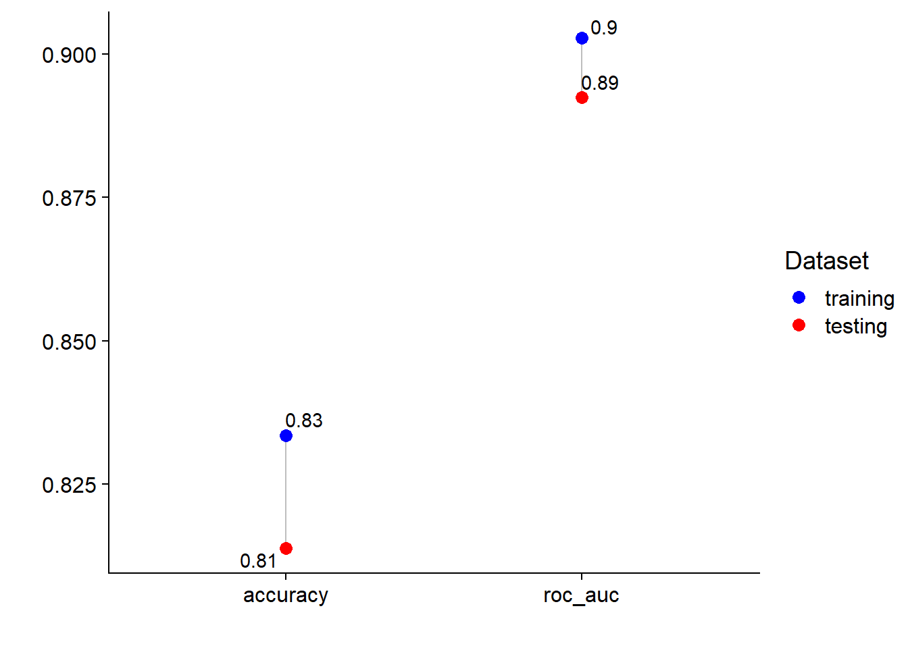
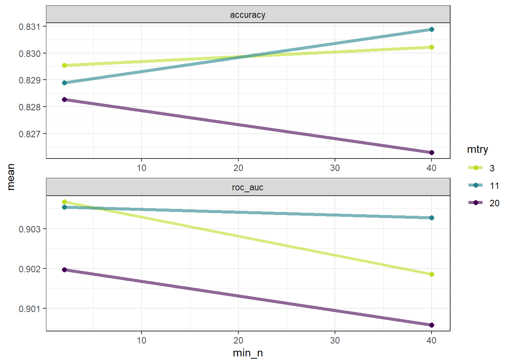
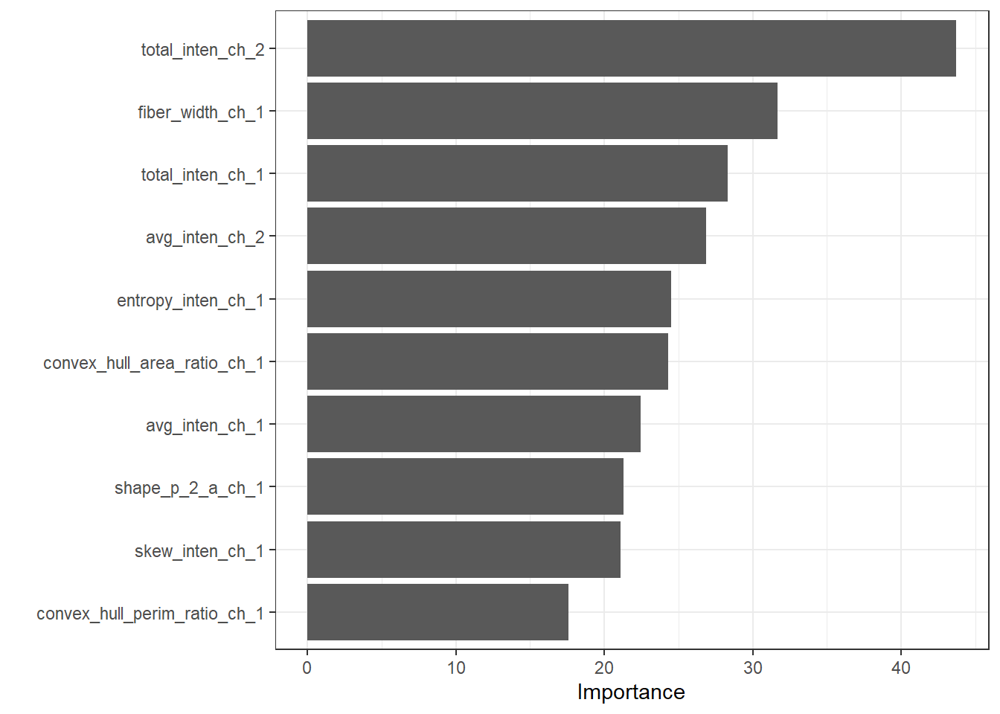
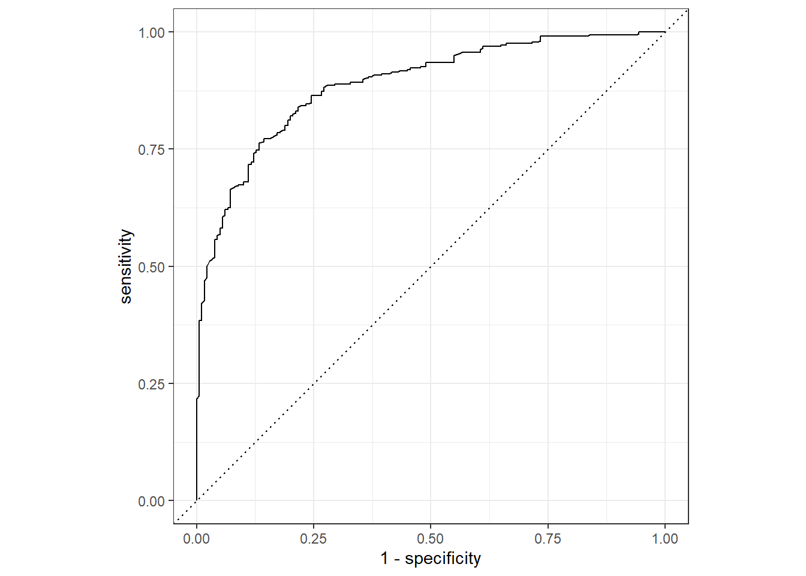
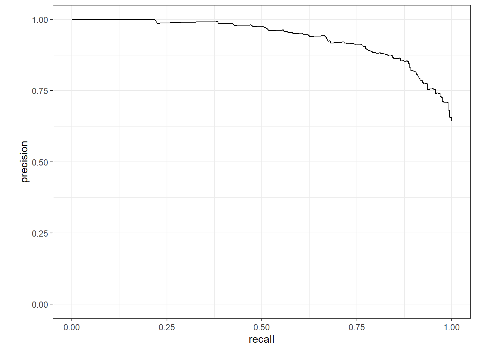

TOC:
Prep
Build the model without workflow
Build the model with workflow
Add resampling
Add hyperparameter tunning
Inspired by the Julia Silge’s blog. I want to try the tidymodels system by add blocks to the backbone. To keep it simple, I used ranger engine for a simple randome forest model on the cells data (comes with tidymodels).
library(tidymodels)
tidymodels_prefer()
## define a function for lollipop plot. also called Cleveland dot plots.
## https://www.r-graph-gallery.com/303-lollipop-plot-with-2-values.html
plot_lollipop <- function(tain_metrics, test_metrics) {
bind_rows(tain_metrics, test_metrics) %>%
select(-.estimator) %>%
pivot_wider(names_from = type, values_from = .estimate) %>%
ggplot()+
geom_segment(aes(x= .metric, xend= .metric,
y=test_set, yend=train_set), color="grey") +
geom_point(aes(x= .metric, y = test_set, color="red"), size=3)+
ggrepel::geom_text_repel(aes(x= .metric, y = test_set,
label = round(test_set,2)))+
geom_point(aes(x= .metric, y = train_set, color = "blue"), size=3 ) +
ggrepel::geom_text_repel(aes(x= .metric, y = train_set,
label = round(train_set,2)))+
scale_color_manual(values=c("blue", "red"), label = c("training", "testing"))+
#coord_flip()+
labs(x = "", y ="", color = "Dataset")+
cowplot::theme_cowplot()
}Load dataset.
data("cells")
cells <- cells %>% select(-case) # `case` is author defined training, testing set.Setting the seed for the ranger() is the key for reproducibility!
In this part, I did not use workflow. The idea is: split dataset –> train the model on the training set –> get the performance on training set –> fit the same model on testing set and get the performance on testing set.
1.1 Split dataset.
set.seed(123)
data_split <- initial_split(cells, strata = class)
data_train <- training(data_split)
data_test <- testing(data_split)1.2 Train model on training set.
ranger_model <- rand_forest() %>%
set_mode("classification") %>%
set_engine("ranger", seed = 12)
ranger_fit <- ranger_model %>%
fit(class ~ ., data = data_train)1.3 Check model performance on training set.
rf_training_pred <-
predict(ranger_fit, data_train) %>%
bind_cols(predict(ranger_fit, data_train, type = "prob")) %>%
bind_cols(data_train %>% select(class))
rf_train_metrics <- rf_training_pred %>% # training set predictions
roc_auc(truth = class, .pred_PS) %>%
bind_rows(
rf_training_pred %>%
accuracy(truth = class, .pred_class)
) %>%
mutate(type = "train_set")1.4 Fit the model on testing and check performance.
rf_testing_pred <-
predict(ranger_fit, data_test) %>%
bind_cols(predict(ranger_fit, data_test, type = "prob")) %>%
bind_cols(data_test %>% select(class))
rf_test_metrics <- rf_testing_pred %>%
roc_auc(truth = class, .pred_PS) %>%
bind_rows(
rf_testing_pred %>%
accuracy(truth = class, .pred_class)
) %>%
mutate(type = "test_set")Plot AUROC and Accuracy measurements on training and testing set.
plot_lollipop(rf_train_metrics, rf_test_metrics)
In the second part, I added a little block called workflow. It combines the pre-processing and model step together.
2.1 Split dataset. Same as the first part.
set.seed(123)
data_split <- initial_split(cells, strata = class)
data_train <- training(data_split)
data_test <- testing(data_split)2.2 Create model workflow
ranger_recipe <-
recipe(formula = class ~ ., data = data_train)
ranger_spec <-
rand_forest() %>%
set_mode("classification") %>%
set_engine("ranger", seed = 12)
ranger_workflow <- workflow() %>%
add_recipe(ranger_recipe) %>%
add_model(ranger_spec)2.3 Train the workflow on training set and get performance.
Mostly same as part 1, but this time fit the workflow.
ranger_fit <- fit(ranger_workflow, data = data_train)
rf_training_pred <-
predict(ranger_fit, data_train) %>%
bind_cols(predict(ranger_fit, data_train, type = "prob")) %>%
bind_cols(data_train %>% select(class))
rf_train_metrics <- rf_training_pred %>%
roc_auc(truth = class, .pred_PS) %>%
bind_rows(
rf_training_pred %>%
accuracy(truth = class, .pred_class)
) %>%
mutate(type = "train_set")2.4 Fit the workflow on testing set and check performance.
Same as part I.
rf_testing_pred <-
predict(ranger_fit, data_test) %>%
bind_cols(predict(ranger_fit, data_test, type = "prob")) %>%
bind_cols(data_test %>% select(class))
rf_test_metrics <- rf_testing_pred %>%
roc_auc(truth = class, .pred_PS) %>%
bind_rows(
rf_testing_pred %>%
accuracy(truth = class, .pred_class)
) %>%
mutate(type = "test_set")plot_lollipop(rf_train_metrics, rf_test_metrics)In the third part, add resampling to the training process. This time I used 10 fold Cross Validation (CV). The purpose is to get a better measurement of the training model performance. It generated 10 models, but we do not use any of these models. When we predict, the model is trained using the whole training set and then is used to predict the testing set.
Many of the step is the same
3.1 Split dataset
set.seed(123)
data_split <- initial_split(cells, strata = class)
data_train <- training(data_split)
data_test <- testing(data_split)3.2 Create CV set
You can set repeat = 5 to repeat the CV process for even better performance measurement.
set.seed(234)
data_folds <- vfold_cv(data_train, strata = class, repeats = 1)
head(data_folds)## # A tibble: 6 x 2
## splits id
## <list> <chr>
## 1 <split [1362/152]> Fold01
## 2 <split [1362/152]> Fold02
## 3 <split [1362/152]> Fold03
## 4 <split [1362/152]> Fold04
## 5 <split [1362/152]> Fold05
## 6 <split [1363/151]> Fold063.3 Create model workflow
ranger_recipe <-
recipe(formula = class ~ ., data = data_train)
ranger_spec <-
rand_forest() %>%
set_mode("classification") %>%
set_engine("ranger", seed = 13)
ranger_workflow <- workflow() %>%
add_recipe(ranger_recipe) %>%
add_model(ranger_spec)3.4 Train the model on the CV training set and get performance
doParallel::registerDoParallel()
set.seed(12345)
ranger_rs <-
fit_resamples(ranger_workflow,
resamples = data_folds,
control = control_resamples(save_pred = TRUE)
)Summarize the 10-fold CV.
rf_train_metrics <- collect_metrics(ranger_rs, summarize = TRUE)
rf_train_metrics## # A tibble: 2 x 6
## .metric .estimator mean n std_err .config
## <chr> <chr> <dbl> <int> <dbl> <chr>
## 1 accuracy binary 0.834 10 0.00924 Preprocessor1_Model1
## 2 roc_auc binary 0.903 10 0.00694 Preprocessor1_Model1## Process the metrics for plotting
rf_train_metrics <- rf_train_metrics %>% rename(.estimate = mean) %>%
select(-std_err, -.config, -n) %>%
mutate(type = "train_set")Performance on each fold.
head(collect_metrics(ranger_rs, summarize = FALSE))## # A tibble: 6 x 5
## id .metric .estimator .estimate .config
## <chr> <chr> <chr> <dbl> <chr>
## 1 Fold01 accuracy binary 0.882 Preprocessor1_Model1
## 2 Fold01 roc_auc binary 0.918 Preprocessor1_Model1
## 3 Fold02 accuracy binary 0.842 Preprocessor1_Model1
## 4 Fold02 roc_auc binary 0.932 Preprocessor1_Model1
## 5 Fold03 accuracy binary 0.816 Preprocessor1_Model1
## 6 Fold03 roc_auc binary 0.895 Preprocessor1_Model1Plot the AUC plot.
collect_predictions(ranger_rs) %>%
group_by(id) %>%
roc_curve(class, .pred_PS) %>%
autoplot()
Plot the confusion matrix.
conf_mat_resampled(ranger_rs, tidy = FALSE) %>%
autoplot()
3.5 Fit the model on the testing set and get performance
ranger_fit <- fit(ranger_workflow, data = data_train)
rf_testing_pred <-
predict(ranger_fit, data_test) %>%
bind_cols(predict(ranger_fit, data_test, type = "prob")) %>%
bind_cols(data_test %>% select(class))
rf_test_metrics <- rf_testing_pred %>%
roc_auc(truth = class, .pred_PS) %>%
bind_rows(
rf_testing_pred %>%
accuracy(truth = class, .pred_class)
) %>%
mutate(type = "test_set")We can see the difference between training and testing is much smaller now!
plot_lollipop(rf_train_metrics, rf_test_metrics)
Another way to fit the model on the testing set is to use last_fit()
final_fitted <- last_fit(ranger_workflow, data_split)
collect_metrics(final_fitted)## # A tibble: 2 x 4
## .metric .estimator .estimate .config
## <chr> <chr> <dbl> <chr>
## 1 accuracy binary 0.814 Preprocessor1_Model1
## 2 roc_auc binary 0.892 Preprocessor1_Model1As long as you set the seed parameter for ranger(), then the results should be exactly the same. You can check all prediction values are the same
sum(rf_testing_pred$.pred_PS != final_fitted$.predictions[[1]]$.pred_PS)## [1] 0In the last part, I added a tuning step.
library(vip)4.1 Split data and create CV set
set.seed(123)
data_split <- initial_split(cells, strata = class)
data_train <- training(data_split)
data_test <- testing(data_split)
set.seed(234)
data_folds <- vfold_cv(data_train, strata = class, repeats = 1)
head(data_folds)## # A tibble: 6 x 2
## splits id
## <list> <chr>
## 1 <split [1362/152]> Fold01
## 2 <split [1362/152]> Fold02
## 3 <split [1362/152]> Fold03
## 4 <split [1362/152]> Fold04
## 5 <split [1362/152]> Fold05
## 6 <split [1363/151]> Fold064.2 Create workflow with tunning
Include the importance = "impurity", so we can get feature importance score latter.
ranger_recipe <-
recipe(formula = class ~ ., data = data_train)
ranger_spec <-
rand_forest(mtry = tune(), min_n = tune()) %>%
set_mode("classification") %>%
set_engine("ranger", seed = 13, importance = "impurity")
ranger_workflow <- workflow() %>%
add_recipe(ranger_recipe) %>%
add_model(ranger_spec)
ranger_param <- parameters(ranger_spec) %>%
update(mtry = mtry(c(3, 20)),
min_n = min_n(c(2, 40)))
# Use grid search.
ranger_grid <- grid_regular(ranger_param, levels = c(mtry = 3, min_n = 2))
ranger_grid## # A tibble: 6 x 2
## mtry min_n
## <int> <int>
## 1 3 2
## 2 11 2
## 3 20 2
## 4 3 40
## 5 11 40
## 6 20 404.3 Tune the hyperparameters.
doParallel::registerDoParallel()
set.seed(12345)
ranger_tune <-
tune_grid(ranger_workflow,
resamples = data_folds,
grid = ranger_grid)Check performance
head(ranger_tune %>% collect_metrics())## # A tibble: 6 x 8
## mtry min_n .metric .estimator mean n std_err .config
## <int> <int> <chr> <chr> <dbl> <int> <dbl> <chr>
## 1 3 2 accuracy binary 0.830 10 0.00926 Preprocessor1_Model1
## 2 3 2 roc_auc binary 0.904 10 0.00694 Preprocessor1_Model1
## 3 11 2 accuracy binary 0.829 10 0.00958 Preprocessor1_Model2
## 4 11 2 roc_auc binary 0.904 10 0.00713 Preprocessor1_Model2
## 5 20 2 accuracy binary 0.828 10 0.00737 Preprocessor1_Model3
## 6 20 2 roc_auc binary 0.902 10 0.00663 Preprocessor1_Model3ranger_tune %>%
collect_metrics() %>%
mutate(mtry = factor(mtry)) %>%
ggplot(aes(min_n, mean, color = mtry)) +
geom_line(size = 1.5, alpha = 0.6) +
geom_point(size = 2) +
facet_wrap(~ .metric, scales = "free", nrow = 2) +
scale_color_viridis_d(option = "viridis", begin = .9, end = 0)+
theme_bw()
Get the best model
ranger_tune %>% show_best("roc_auc")## # A tibble: 5 x 8
## mtry min_n .metric .estimator mean n std_err .config
## <int> <int> <chr> <chr> <dbl> <int> <dbl> <chr>
## 1 3 2 roc_auc binary 0.904 10 0.00694 Preprocessor1_Model1
## 2 11 2 roc_auc binary 0.904 10 0.00713 Preprocessor1_Model2
## 3 11 40 roc_auc binary 0.903 10 0.00779 Preprocessor1_Model5
## 4 20 2 roc_auc binary 0.902 10 0.00663 Preprocessor1_Model3
## 5 3 40 roc_auc binary 0.902 10 0.00763 Preprocessor1_Model4best_model <- ranger_tune %>%
select_best("roc_auc")
best_model## # A tibble: 1 x 3
## mtry min_n .config
## <int> <int> <chr>
## 1 3 2 Preprocessor1_Model14.4 Finalize the model/workflow and fit the training set
final_wf <-
ranger_workflow %>%
finalize_workflow(best_model)
final_wf## == Workflow ====================================================================
## Preprocessor: Recipe
## Model: rand_forest()
##
## -- Preprocessor ----------------------------------------------------------------
## 0 Recipe Steps
##
## -- Model -----------------------------------------------------------------------
## Random Forest Model Specification (classification)
##
## Main Arguments:
## mtry = 3
## min_n = 2
##
## Engine-Specific Arguments:
## seed = 13
## importance = impurity
##
## Computational engine: rangerFit training set
final_model <- final_wf %>% fit(data_train)
final_model## == Workflow [trained] ==========================================================
## Preprocessor: Recipe
## Model: rand_forest()
##
## -- Preprocessor ----------------------------------------------------------------
## 0 Recipe Steps
##
## -- Model -----------------------------------------------------------------------
## Ranger result
##
## Call:
## ranger::ranger(x = maybe_data_frame(x), y = y, mtry = min_cols(~3L, x), min.node.size = min_rows(~2L, x), seed = ~13, importance = ~"impurity", num.threads = 1, verbose = FALSE, probability = TRUE)
##
## Type: Probability estimation
## Number of trees: 500
## Sample size: 1514
## Number of independent variables: 56
## Mtry: 3
## Target node size: 2
## Variable importance mode: impurity
## Splitrule: gini
## OOB prediction error (Brier s.): 0.11995264.5 Explore feature importance
final_model %>%
pull_workflow_fit() %>%
vip() + theme_bw()
4.6 Fit testing set and check performance
final_fit <-
final_wf %>%
last_fit(data_split) final_fit %>%
collect_metrics()## # A tibble: 2 x 4
## .metric .estimator .estimate .config
## <chr> <chr> <dbl> <chr>
## 1 accuracy binary 0.814 Preprocessor1_Model1
## 2 roc_auc binary 0.888 Preprocessor1_Model1final_fit %>%
collect_predictions() %>%
roc_curve(class, .pred_PS) %>%
autoplot()
final_fit %>%
collect_predictions() %>%
pr_curve(class, .pred_PS) %>%
autoplot()